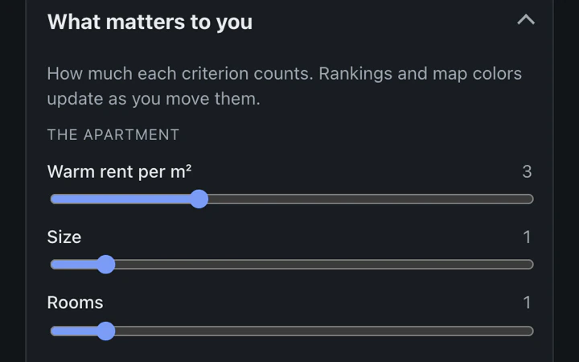

apartment-finder
Scores apartment listings out of 100 by rent, size, and the walk or bike ride to the supermarket, tram stop, pharmacy and gym. It began as a spreadsheet with some Apps Script. A worker geocodes each listing, finds the nearest places in PostGIS and asks two self-hosted OSRM routers for travel times; Flux deploys every merge to main and rolls back a release that doesn’t come up.
Go, PostgreSQL with PostGIS, OSRM, k3s, Helm, Flux